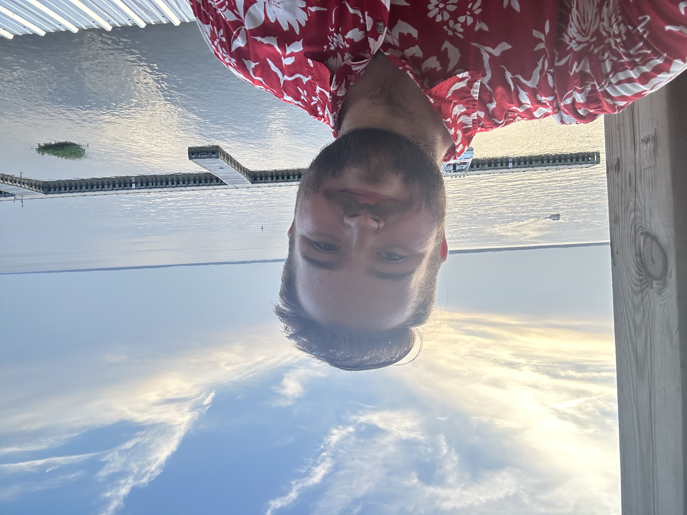

Mitch Ryba is a dynamic and dedicated professional, currently building a promising career in student affairs and public health. Mitch began their educational journey at William Rainey Harper College, where they graduated with honors distinction, earning an Associate of Science degree from August 2020 to May 2022. They then advanced to the University of Illinois Urbana-Champaign to pursue a BS in Community Health coupled with a Master's in Public Health, a journey they embarked on in August 2022 and is presently ongoing. In addition to their academic pursuits, Mitch has amassed a rich portfolio of experience, particularly at the University of Illinois Urbana-Champaign. Currently, they serve as a Community Advocate Intern at the Gender & Sexuality Resource Center, where they play a pivotal role in supporting LGBTQIA+ advocacy efforts through various programs and initiatives. Simultaneously, Mitch holds the position of Counseling Center Paraprofessional Manager at the university's Counseling Center, honing skills in public speaking, cultural competence, and facilitation, while actively participating in the advisory and strategic planning committee for the CCP Program. Mitch's leadership and organizational skills shone brightly during their tenure as a Wellness Coordinator at William Rainey Harper College's Harper Wellness Department. Here, they spearheaded several initiatives, including the Bike Share Program and Well-Being Bingo, managed a substantial budget effectively, and contributed to hiring committees to enhance team productivity. Their role as a Resident Advisor for the TRIO Upward Bound Summer Program further allowed them to foster a safe and nurturing environment for students, offering comprehensive programs that catered to their academic and developmental needs. Beyond their roles in health and wellness, Mitch is a recognized figure in student governance and advocacy. As a NUFP Fellow with the National Association of Student Personnel Administrators since August 2021, Mitch has actively participated in leadership development experiences and contributed valuable student perspectives on racial justice on campus. Their commitment to student representation is also evident in their role as an Outreach Coordinator with the Illinois Student Government, where they facilitated vital communications and served on several committees focusing on diversity and community. Furthermore, Mitch proudly serves as a student voting member on the Urbana-Champaign senate, actively participating in the committee on student discipline. As they continue to shape their professional pathway, Mitch remains steadfast in their commitment to fostering community well-being and advancing the field of public health and student affairs..
Provide information about your class program teams here.
You can upload your resume as a PDF and link it here. Alternatively, you can list your experiences and achievements in this section.
Showcase your work here. You can use this section to display images, videos, or links to projects you have worked on.